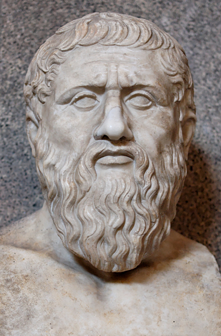

理想国
柏拉图简介
柏拉图（约公元前427年-公元前347年），出身于雅典贵族，曾执教40年。
古希腊哲学家，西方哲学乃至整个西方文化最伟大的哲学家和思想家之一，他和老师苏格拉底、学生亚里士多德被并称为古希腊三大哲学家。
他一生著述颇丰，其哲学思想主要集中在《理想国》和《法律篇》中。
理想国简介
《理想国》又译作《国家篇》、《共和国》等。
与柏拉图大多数著作一样以苏格拉底为主角用对话体写成，共分10卷，其篇幅之长仅次于《法律篇》，一般认为属于柏拉图中期的作品。
这部“哲学大全”不仅是柏拉图对自己此前哲学思想的概括和总结，而且是当时各门学科的综合，它探讨了哲学、政治、伦理道德、教育、文艺等等各方面的问题，以理念论为基础，建立了一个系统的理想国家方案。
《理想国》是西方政治思想传统的最具代表性的作品，通过苏格拉底与他人的对话，给后人展现了一个完美优越的城邦。
柏拉图把国家分为三个阶层：受过严格哲学教育的统治阶层、保卫国家的武士阶层、平民阶层。他鄙视个人幸福，无限地强调城邦整体、强调他一己以为的“正义”。在柏拉图眼中，第三阶层的人民是低下的，可以欺骗的。他赋予了统治者无上的权力，甚至统治者“为了国家利益可以用撒谎来对付敌人或者公民”。
《理想国》涉及柏拉图思想体系的各个方面，包括哲学、伦理、教育、文艺、政治等内容，主要是探讨理想国家的问题。
《理想国》一书是柏拉图的一篇重要对话录，对话录里柏拉图以苏格拉底之口通过与其他人对话的方式设计了一个真、善、美相统一的政体，即可以达到公正的理想国。
柏拉图的理想国是人类历史上最早的乌托邦。在他的理想国里统治者必须是哲学家，或者让政治家去学习哲学。他认为现存的政治都是坏的，人类的真正出路在于哲学家掌握政权，也只有真正的哲学家才能拯救当时城邦所处的危机。这种信念构成了柏拉图成熟的政治哲学体系的核心。在他的眼里“哲学家”有着特殊的内涵。他认为哲学家是最高尚、最有学识的人，而这种贤人统治下的贤人政体就是最好的政体。所以，只有建立以哲学家为国王的国家才是最理想的国家。这个国家就是存在于天上的模范国家。
在他看来，哲学家的本质是具有知识，具有智慧、正义、善的美德，只有哲学家才能达到对国家最高理念的认识，即对“善”的把握，而其他人也只能把握“意见”而已。治国作为一门知识，也只有哲学家才能掌握它，进而有资格执政，也就是说只有哲学家才能达到对于国家理念的认识，知道“理想国”应该怎样组织、怎样治理。这样，所谓哲学家执政，就被柏拉图理解为高超的智慧、真实的知识、完美的德行和绝对最高权力的结合。他坚信只有哲学家才可拯救城邦和人民，哲学家是理想国必然的统治者。
人类追求的正义与善就是柏拉图理想国的主题，他认为国家、政治和法律要朝向真正的存在并与人的灵魂相关才有意义。在《理想国》里苏格拉底刚开始讨论的话题就是“正义”问题，由此我们可以看到柏拉图对正义有着多么强烈的憧憬与向往！他认为绝对的正义在神那里，这正好印证了对话结尾的宣言，“让我们永远走向上的路，追求正义和智慧”。正义和智慧不仅是国家的主题，也可以说是整个宇宙存在的本质，因为国家的起点“就是永无止境的时间以及时间带来的变化”。
柏拉图式的爱情似乎是精神恋的代名词，用来指称那种超越时间、空间，不以占有对方肉体为目的的只存在于灵魂间的爱情；而实际上柏拉图式爱情的真谛指的是一种对节制的崇尚，对善和美的追求。